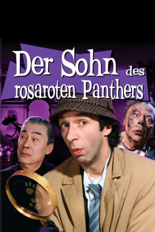

#4726 Der Sohn des rosaroten Panthers
 
 IMDB-Wertung: 3.7 / 10
IMDB-Wertung: 3.7 / 10  Metascore: 0
Metascore: 0 
Kommissar Dreyfus ermittelt in einem neuen Fall: Die bildschöne Prinzessin Yasmin wurde von dem Terroristen Hans entführt. Dreyfus wird der junge Gendarm Jacques zur Seite gestellt. Beide wissen nicht, daß Jacques der Sohn des verstorbenen Inspektors Clouseau ist - aber Dreyfus bekommt die Verwandtschaft schon bald zu spüren: Während der Ermittlungen spielt ihm Jacques aus Tolpatschigkeit ebenso übel mit, wie es Clouseau in seinen besten Tagen getan hatte.
Jahr: 1993
Dauer: 88 Minuten
FSK: 12
Land: Italien Studio: 20th Century Fox Home EntertainmentTonspuren:
Untertitel:
Auflösung: 1080p (1680x720) Größe: 2088 MB
Genre: Komödie
Regisseur: Blake Edwards
Drehbuch: David Shaber
Soundtrack:
Darsteller:
 Roberto Benigni als Gendarme Jacques Gambrelli
Roberto Benigni als Gendarme Jacques Gambrelli Herbert Lom als Police Commisioner Charles Dreyfus
Herbert Lom als Police Commisioner Charles Dreyfus Claudia Cardinale als Maria Gambrelli
Claudia Cardinale als Maria Gambrelli- Shabana Azmi als Queen
- Debrah Farentino als Princess Yasmin
 Robert Davi als Hans Zarba
Robert Davi als Hans Zarba- Mark Schneider als Arnon
 Mike Starr als Hanif
Mike Starr als Hanif Anton Rodgers als Police Chief Charles Lazar
Anton Rodgers als Police Chief Charles Lazar Burt Kwouk als Cato Fong
Burt Kwouk als Cato Fong Graham Stark als Professor Auguste Balls
Graham Stark als Professor Auguste Balls Oliver Cotton als King Haroak
Oliver Cotton als King Haroak Aharon Ipalé als Gen. Jaffar
Aharon Ipalé als Gen. Jaffar- Natasha Pavlovich als Rima
 Henry Goodman als Andre, anchorman
Henry Goodman als Andre, anchorman Dermot Crowley als Sergeant Francois Duval
Dermot Crowley als Sergeant Francois Duval Selva Rasalingam als Customs official
Selva Rasalingam als Customs official Nadim Sawalha als Lugash agent
Nadim Sawalha als Lugash agent- Mozaffar Shafeie als Omar
- Jacinta Mulcahy als Louise Chauvin
- Babette Barat als Female reporter
 John H. Francis als Yacht captain
John H. Francis als Yacht captain Nicoletta Braschi als Jacqueline Gambrelli
Nicoletta Braschi als Jacqueline Gambrelli- Henry Mancini als Himself , uncredited
- Jennifer Edwards als Yussa
- Kenny Spalding als Garth
- Herb Tanney als Jean Claude
 Liz Smith als Marta Balls
Liz Smith als Marta Balls- Joe James als Doctor
- Jon Paul Morgan als Col. Al-Durai
- Andrew Hawkins als French agent
- Badi Uzzaman als Wasim
- Arnold Yarrow als Uncle Idris
- Harry Audley als Pilot
- Steven Crossley als Reporter
- Bill Wallis als President
- Simon De Selva als Co-pilot
- Ahmed Khalil als Otter pilot
- Joumana Al Awar als Queen's secretary
- Hossam Ramzy als Burly Arab
- Sheila Hyde als Wafiyyah
- Tony Kirwood als Marcel Langois , scenes deleted
- Andy Scourfield als Clouseau's ghost , scenes deleted
 Elizabeth Banks als Nurse
Elizabeth Banks als Nurse- Tony Adams als Wedding Guest , uncredited
Datei: X:\7+mehr(A-Z)\Rosarote Panther\Sohn des rosaroten Panthers, Der (1993, FSK12, 1680x720).mkv seit 09.11.2016
Festplatte: HD Collection-7+mehr(A-Z)+Person
 Es gibt insgesamt 13 Filme in der Gruppe '7+mehr(A-Z)\Rosarote Panther'
Es gibt insgesamt 13 Filme in der Gruppe '7+mehr(A-Z)\Rosarote Panther'